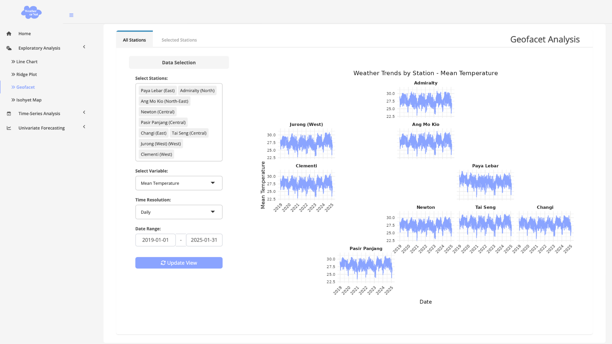

Project Proposal: Wheather or Not – Predicting the Unpredictable
1 Motivation
In recent years, the increasing frequency of extreme weather events worldwide has raised concerns about similar trends emerging in Singapore. As a densely populated tropical city-state, Singapore may be particularly vulnerable to shifts in temperature, rainfall intensity, and other climate related changes.
To investigate these patterns, we are developing an interactive R Shiny dashboard that enables exploratory data analysis (EDA) and forecasting based on historical weather data from 9 AWS stations across Singapore. Through intuitive visualizations and modeling, the Shiny App dashborard empowers users to explore local weather trends and gain insights into Singapore’s evolving climate.
2 Objective
The objectives of this proposal are to:
Implement EDA tools to observe weather patterns across 9 AWS stations, featuring multiple temporal resolutions and visualization techniques
Design and integrate time-series analysis and forecasting models to predict weather trends
Develop an interactive dashboard that simplifies complex weather data for public exploration and understanding
3 Data
The historical weather data from Meteorological Service Singapore will be used for analysis. We will collect data from the following 9 AWS stations across Singapore between January 2019 and January 2025:
| Weather Station | Planning Area | Planning Region |
| Changi | Changi | East Region |
| Paya Lebar | Paya Lebar | East Region |
| Newton | Newton | Central Region |
| Tai Seng | Geylang | North-East Region |
| Ang Mo Kio | Ang Mo Kio | North-East Region |
| Admiralty | Woodlands | North Region |
| Pasir Panjang | Queenstown | West Region |
| Clementi | Clementi | West Region |
| Jurong West | Jurong West | West Region |
4 Methodology
There will be three main components in our Shiny App:
4.1 Exploratory Data Analysis
Through an interactive Shiny App visualization, users can analyze weather patterns and explore relationships between weather factors and geographical features.
The following visualization methods will be used in our exploratory data analysis:
Line Chart: Visualize daily, weekly, and monthly weather trends by station over time.
- Seasonal Monsoon Patterns: Highlight the Northeast Monsoon (Dec–Mar) and Southwest Monsoon (Jun–Sep) periods using distinct colors, allowing users to observe seasonal weather differences influenced by the monsoons.
Ridge Plot + Box Plot: Show the distribution of monthly weather variations by station. The users can observe weather difference of stations and cross stations directly.
Geofacet: Display a line chart of weather data based on station coordinates, allowing users to observe how different locations may influence weather patterns.
- Isohyet Map: Visualize weather patterns using the
tmapandgstatpackages to create an Isohyet map through spatial interpolation. This tab allows users to apply two interpolation methods (IDW and Ordinary Kriging) to generate the map.
4.2 Time Series Analysis
This section allows users to analyze weather data through STL decomposition and correlograms, helping them gain deeper insights into underlying patterns and structures in the data.
Time Series Decomposition:
- STL Decomposition: Separates the time series into seasonal, trend, and remainder components.
- Cycle Plot: Highlights recurring seasonal patterns across different periods.
Correlograms:
ACF (Autocorrelation Function):
Measures the correlation between the time series and its own lagged values. It helps identify the presence of repeating patterns or seasonality and can indicate whether differencing is needed to achieve stationarity.PACF (Partial Autocorrelation Function):
Shows the correlation between the time series and its lagged values after removing the effects of shorter lags. It is especially useful for determining the appropriate number of lags in autoregressive (AR) models.Differencing Analysis:
Includes both trend differencing (removing long-term trends) and seasonal differencing (removing seasonal effects) to help transform the time series into a stationary format, which is often required for effective forecasting using models like ARIMA.
4.3 Univariate Forecasting
This section allows users to select a variable of interest for time series forecasting. We provide a variety of models, including:
ETS-ANN: Simple Exponential Smoothing
ETS-AAN: Holt’s Linear Trend
ETS-AAA: Holt-Winters Additive
ETS-MMM: Holt-Winters Multiplicative
ETS-MAM: Multiplicative Holt-Winters with Additive Trend
ETS-MMN: Multiplicative Trend Exponential Smoothing
Auto ARIMA
Auto ETS
Model Training
The train-test split is set at 80% vs 20%. This tab allows users to select, train, test, and evaluate models using metrics such as AIC, BIC, and RMSE. Residual plots are also provided to help assess model performance and adequacy.
Model Forecasting
After reviewing model training performance, users can select their preferred models for forecasting. The selected models will generate future predictions, and key model parameters will be displayed for reference.
5 R Packages
The R packages we will be using for the project include:
| Package | Description |
|---|---|
| tidyverse | For data manipulation |
| zoo | For time series analysis and manipulation |
| janitor | For examining and cleaning dirty data |
| fs | For file system operations |
| DT | For interactive data tables |
| kableExtra | For manipulating table styles |
| knitr | For dynamic report generation with R |
| ggridges | For ridgeline plots that create the impression of a mountain range. They can be useful for visualising changes in distributions over time or space. |
| lubridate | For handling date-time data |
| tsibble | For tidy temporal data with wrangling tools |
| feasts | For analysing tidy time series data with decomposition methods (STL), statistical summaries and graphics functions(cycle plot) |
| fable | Forecasting models for tidy time series data |
| tmap | For drawing thematic maps |
| sf | Providing a standardized way to encode and analyze spatial vector data |
| terra | For spatial data analysis (replaces the raster package) |
| gstat | For spatial and spatio-temporal geostatistical modelling, prediction and simulation |
| forecast | For displaying and analysing univariate time series forecasts |
6 Dashboard Prototype
6-1 EDA Prototype:

6-2 Time Series Analysis Prototype:
6-3 Univariate Forecasting Prototype:

7 Task allocation
8 Project Schedule
9 Reference
- Meteorological Service Singapore. (2025). Climate Map. Meteorological Service Singapore. https://www.weather.gov.sg/climate-detailed-view/